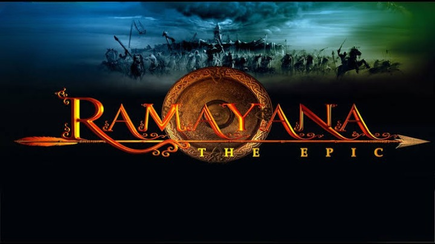

The Ramayana written by Tulsidas known as Ramcharitmanas, is a sixteenth century epic.The story revolves around Rama, who was the seventh avatar of the Hindu God Vishnu.He is the central figure of the Hindu epic Ramayana, which is the principal narration of the events connected to His incarnation on earth, His ideals and His greatness. He was the eldest son of King Dashratha-the ruler of Kosala Kingdom. Rama's life and journey is one of andherence to dharma despite harsh tests and obstacles and many pains of life and time.This adherence made him earn the name of Maryada Purushottam which literally means The Perfect Man or Lord of Self-Control or Lord of Virtue. For the sake of his father's honour,Rama abandons his claim to Ayodhaya's throne to serve an exile of fourteen years in the forest.His wife sita and brother Laskshmana decide to join him, an all three spend the fourteen years in exile together.While in exile,sita is kdnapped by Ravana,the king of Lanka.After a long and arduous search,Rama fights a colossal war against Ravana's armies. In a war of powerful and magical beings,greatly destructive weaponry and battles,Rama slays Ravana in battle and liberates his wife.Having completed his exile,Rama returns to be crowned king in ayodhaya and eventually becomes the emperor. The whole story is divided into seven parts known as 'kands'.